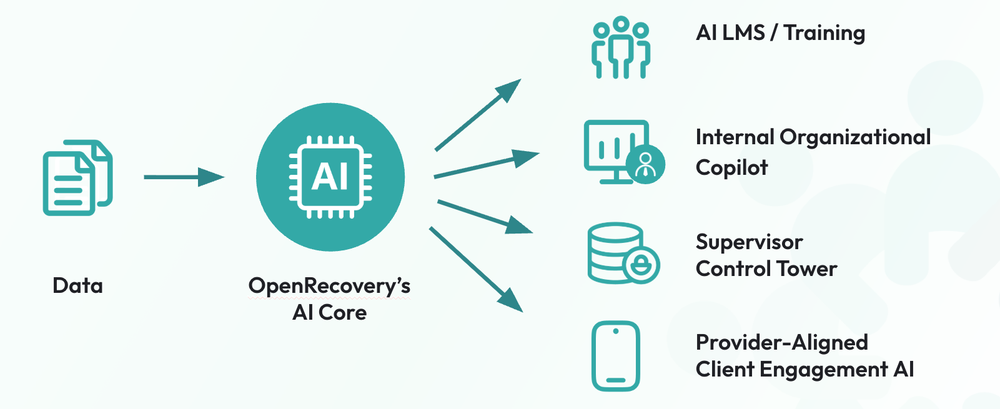

Slide 01
OpenRecovery
AI Infrastructure for Behavioral Health
Slide 02
Behavioral health providers know AI is inevitable, but they lack a safe way to adopt it.
It’s Happening
AI is already entering care through documentation, claims workflows, and direct patient use.
The Risk is Real
Current vendors do not provide a trusted entry point that builds internal capability before touching sensitive clinical workflows.
Fear and FOMO
Organizations are stuck between pressure to adopt and fears around privacy, compliance, efficacy, liability, and staff resistance.
Providers need a controlled adoption path that amplifies their expertise rather than replacing it.
Slide 03
Why training is the wedge.
The easiest place to introduce AI is where every organization already has budget, mandate, and workflow: training and compliance.
Training and Compliance Capacity Building
- Required by every organization
- Low-risk compared with client-facing AI
- Weak incumbent LMS vendors despite meaningful spend
- Natural path into daily provider workflow
Slide 04
AI Learning Management System.
Slide 05
Solution.
OpenRecovery starts as AI-powered learning and capacity building, then expands into the organization’s behavioral health intelligence layer.

Slide 06
Why OpenRecovery Wins.
- 2 years operating in the field
- 100,000 users
- 3 million AI-user messages
- 1,500 facilitator / providers
- Proprietary recovery-stage and behavioral context data
- Domain partnerships and distribution channels
Partners and channels
Slide 07
Recovery Operating System.
Slide 08
Product Stack.
Slide 09
Traction & GTM.
Association Partners
- NAATP
- TPAS
- Fletcher Group
Certification Partners
- IC&RC + several state certification boards
- SMART Recovery
- CCAR
Distribution Channels
- EHRs
- Compliance Platforms
- Alumni Apps
Enterprise Clients
Contracts / estimated first-year value
Slide 10
Team & Raise.
Built for people in recovery by people in recovery.
Raising from partners in behavioral health to cocreate safe and effective AI
- Strategic partner min investment $100k, contract discounts starting at $250k
- Individual investment starting at $50k
- Board seat negotiable for $1m+ investment
- Round terms: $15m pre-money valuation with a target raise of $4.5m